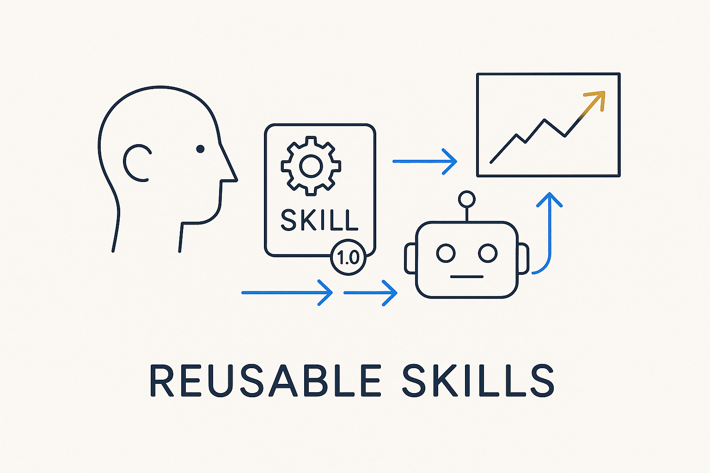

Reusable, AI-readable units of behavior — a skill packages how to do one thing well, versioned and callable, so people and AI apply it the same way every time.

> Reusable, AI-readable units of behavior — a skill packages how to do one thing well, versioned and callable, so people and AI apply it the same way every time.
A skill is a packaged unit of *how to do one thing well* — a naming convention, a review checklist, a modeling step, a generation routine — written down once, versioned, and callable. Instead of the knowledge living in one expert’s head and being re-explained every time, it becomes an asset the whole team, and the AI, can invoke. The value is consistency: the skill is applied the same way on Tuesday as it was last month, whoever (or whatever) runs it.
Skills are what make AI dependable rather than improvisational. An AI given a vague prompt guesses; an AI given a skill — explicit steps, grounded in the structure — performs. This is the difference between hoping the model does the right thing and *directing* it. Skills turn scattered expertise into reusable behavior the platform can lean on.
They compound with their siblings: rules say what must hold, patterns say what shape to reach for, and skills say how to get there — all as structured, versioned metadata the AI can read. A skill is the unit that lets good practice scale beyond the person who first figured it out.
Where it lives: the method layer of Breakthrough Modeling — reusable behavior, versioned and callable.